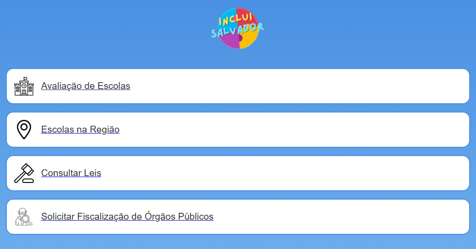
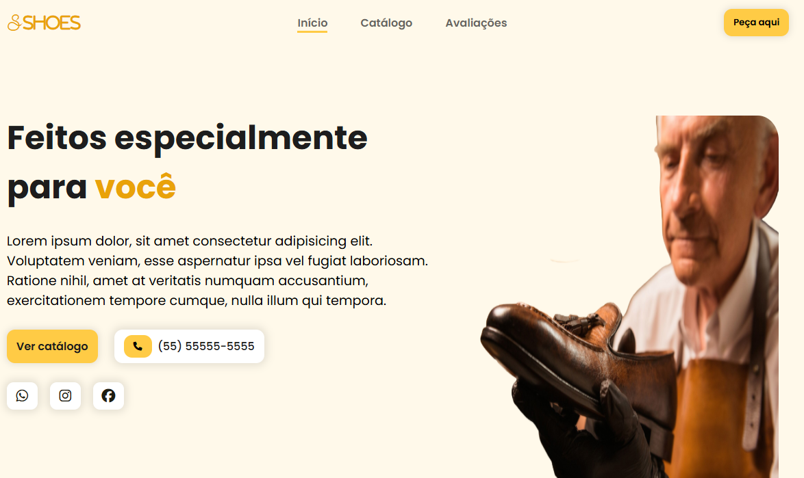
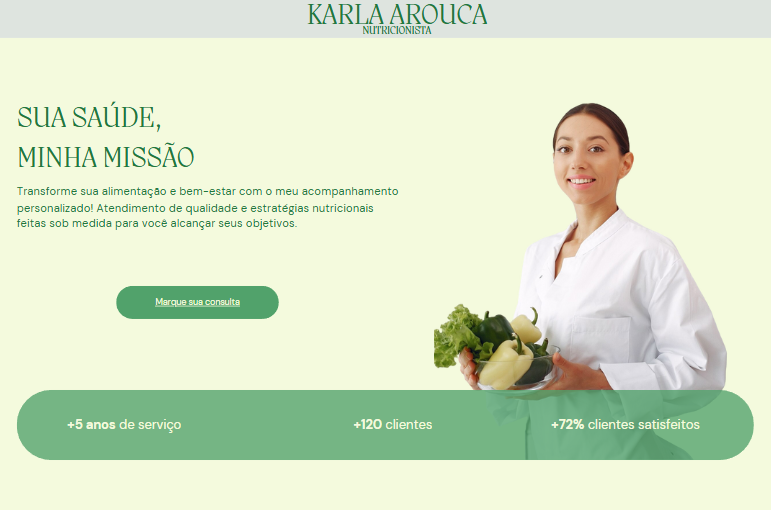

Me chamo Rafael Santana, tenho 24 anos e sou formado em Análise e Desenvolvimento de Sistemas pela Universidade Salvador (UNIFACS). Tenho interesse por tecnologia, design e inovação, e acredito que a melhor forma de evoluir é colocando a mão na massa.
Atualmente, estou focado em aprofundar meus conhecimentos através da prática constante, desenvolvendo projetos que reflitam minha evolução como profissional.
Este portfólio representa meu compromisso com o aprendizado contínuo, reunindo iniciativas pessoais e acadêmicas com foco em desenvolvimento web, experiência do usuário e soluções digitais.
Além da área técnica, valorizo muito o trabalho em equipe, a comunicação clara e a construção de soluções que façam diferença no dia a dia das pessoas. Aqui você encontrará um pouco da minha trajetória, minhas habilidades e tudo o que venho criando com dedicação e propósito.

Projeto proposto como Avaliação de uma matéria da UNIFACS, onde o objetivo era desenvolver um sistema que oferecesse uma solução tecnológica para um probelma público. Este projeto foi realizado com as linguagens HTML, CSS e JavaScript, além de possuir uma API da Leaflet.js para inserção de um mapa interativo.
Este projeto é um site institucional fictício chamado UNES, desenvolvido inteiramente em HTML puro, com foco em demonstrar domínio da estruturação de páginas web sem o uso de CSS externo, JavaScript ou frameworks.
Todas as páginas compartilham a mesma estrutura de layout, feita exclusivamente com elementos de tabela (<table>), o que demonstra o conhecimento clássico de construção de páginas antes do uso moderno de CSS para layout.

Projeto realizado para pratica e obtenção de experiência. Trata-se de uma Landing Page de uma loja de sapatos responsiva. Este projeto foi realizado com as linguagens HTML, CSS, JavaScript e utilizou a biblioteca jQuery.
Landing page desenvolvida com WordPress e o construtor Elementor, com foco em apresentar um curso fictício chamado "Arquiteto Empreendedor", voltado para arquitetos recém-formados que desejam aprimorar suas habilidades empreendedoras e captar mais clientes. Após a criação do site, utilizei o plugin Simply Static, responsável por gerar uma versão estática do conteúdo para melhor desempenho e hospedagem externa. O projeto foi idealizado para demonstrar domínio em criação de interfaces, uso de CMS e publicação eficiente de páginas.

Projeto de uma Landing Page sobre sobre uma nutricionista fictícia. Esta Landing Page foi realizada com a ferramenta do Canva. Obs.: Redimensionamento para dispositivos móveis desativado.